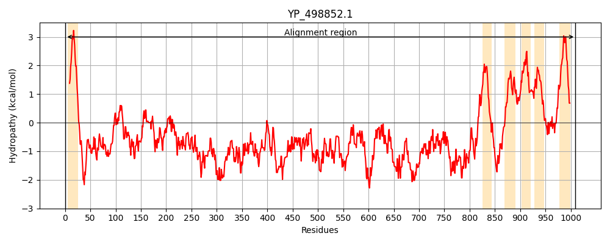
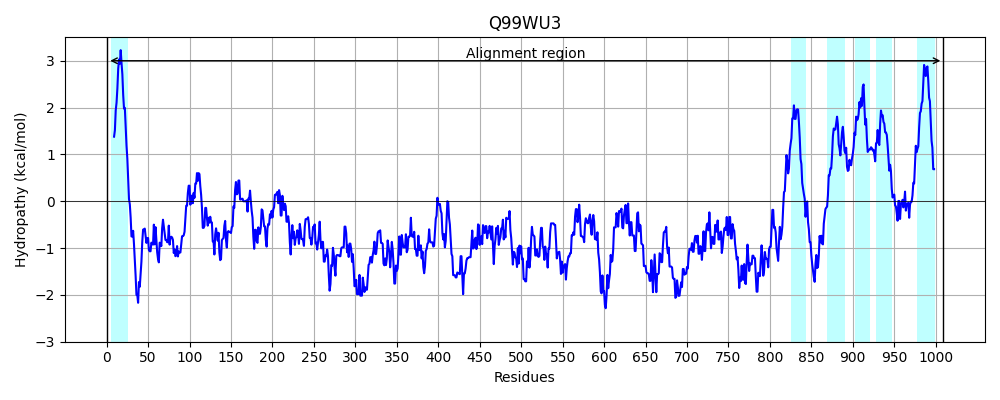
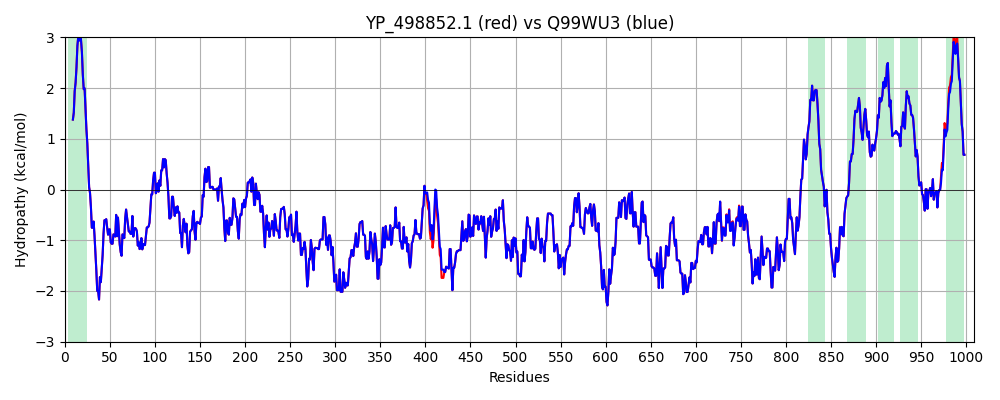

Hit Accession: Q99WU3
Hit TCID: 3.A.7.17.1
Hit Description: gnl|BL_ORD_ID|17687 gnl|TC-DB|Q99WU3|3.A.7.17.1 Protein esaA - Staphylococcus aureus (strain Mu50 / ATCC 700699).
Mach Len: 1009
e:0.000000
Query TMS Count : 6
Hit TMS Count: 6
TMS-Overlap Score: 6.250000
Predicted Substrates:CHEBI:36080;protein, CHEBI:36080;protein
BLAST Alignment:
Score: 5089 , Bit scores: 1964 bits, E-value: 0.0e+00, Alignment length: 1009, Percentage identity: 100
Query: 1 MKKKNWIYALIVTLIIIIAIVSMIFFVQTKYGDQSEKGSQSVSNKNNKIHIAIVNEDQPTTYNGKKVELGQAFIKRLANEKNYKFETVTRNVAESGLKNGGYQVMIVIPENFSKLAMQLDAKTPSKISLQYKTAVGQKEEVAKNTEKVVSNVLNDFNKNLVEIYLTSIIDNLHNAQKNVGAIMTREHGVNSKFSNYLLNPINDFPELFTDTLVNSISANKDITKWFQTYNKSLLSANSDTFRVNTDYNVSTLIEKQNSLFDEHNTAMDKMLQDYKSQKDSVELDNYINALKQMDSQIDQQSSMQDTGKEEYKQTVKENLDKLREIIQSQESPFSKGMIEDYRKQLTESLQDELANNKDLQDALNSIKMNNAQFAENLEKQLHDDIVKEPDTDTTFIYNMSKQDFIAAGLNEDEANKYEAIVKEAKRYKNEYNLKKPLAEHINLTDYDNQVAQDTSSLINDGVKVQRTETIKSNDINQLTVATDPHFNFEGDIKINGKKYDIKDQSVQLDTSNKEYKVEVNGVAKLKKDAEKDFLKDKTMHLQLLFGQANRQDEPNDKKATSVVDVTLNHNLDGRLSKDALSQQLSALSRFDAHYKMYTDTKGREDKPFDNKRLIDMMVDQVINDMESFKDDKVAVLHQIDSMEENSDKLIDDILNNKKNTTKNKEDISKLIDQLENVKKTFAEEPQEPKIDKGKNDEFNTMSSNLDKEISRISEKSTQLLSDTQESKSIADSVSGQLNQVDNNVNKLHATGRALGVRANDLNRQMAKNDKDNELFAKEFKKVLQNSKDGDRQNQALKAFMSNPVQKKNLENVLANNGNTDVISPTLFVLLMYLLSMITAYIFYSYERAKGQMNFIKDDYSSKNHLWNNVITSGVIGTTGLVEGLIVGLIAMNKFHVLAGYRAKFILMVILTMMVFVLINTYLLRQVKSIGMFLMIAALGLYFVAMNNLKAAGQGVTNKISPLSYIDNMFFNYLNAEHPIGLVLVILTVLVIIGFVLNMFIKHFKKERLI 1009
MKKKNWIYALIVTLIIIIAIVSMIFFVQTKYGDQSEKGSQSVSNKNNKIHIAIVNEDQPTTYNGKKVELGQAFIKRLANEKNYKFETVTRNVAESGLKNGGYQVMIVIPENFSKLAMQLDAKTPSKISLQYKTAVGQKEEVAKNTEKVVSNVLNDFNKNLVEIYLTSIIDNLHNAQKNVGAIMTREHGVNSKFSNYLLNPINDFPELFTDTLVNSISANKDITKWFQTYNKSLLSANSDTFRVNTDYNVSTLIEKQNSLFDEHNTAMDKMLQDYKSQKDSVELDNYINALKQMDSQIDQQSSMQDTGKEEYKQTVKENLDKLREIIQSQESPFSKGMIEDYRKQLTESLQDELANNKDLQDALNSIKMNNAQFAENLEKQLHDDIVKEPDTDTTFIYNMSKQDFIAAGLNE EANKYEAIVKEAKRYKNEYNLKKPLAEHINLTDYDNQVAQDTSSLINDGVKVQRTETIKSNDINQLTVATDPHFNFEGDIKINGKKYDIKDQSVQLDTSNKEYKVEVNGVAKLKKDAEKDFLKDKTMHLQLLFGQANRQDEPNDKKATSVVDVTLNHNLDGRLSKDALSQQLSALSRFDAHYKMYTDTKGREDKPFDNKRLIDMMVDQVINDMESFKDDKVAVLHQIDSMEENSDKLIDDILNNKKNTTKNKEDISKLIDQLENVKKTFAEEPQEPKIDKGKNDEFNTMSSNLDKEISRISEKSTQLLSDTQESK+IADSVSGQLNQ+DNNVNKLHATGRALGVRANDLNRQMAKNDKDNELFAKEFKKVLQNSKDGDRQNQALKAFMSNPVQKKNLENVLANNGNT+VISPTLFVLLMYLLSMITAYIFYSYERAKGQMNFIKDDYSSKNHLWNNVITSGVIGTTGLVEGLIVGLIAMNKFHVLAGYRAKFILMVILTMMVFVLINTYLLRQVKSIGMFLMIAALGLYFVAMNNLKAAGQGVTNKISPLSYIDNMFFNYLNAEHPIGL LVILTVLVIIGFVLNMFIKHFKKERLI
Sbjct: 1 MKKKNWIYALIVTLIIIIAIVSMIFFVQTKYGDQSEKGSQSVSNKNNKIHIAIVNEDQPTTYNGKKVELGQAFIKRLANEKNYKFETVTRNVAESGLKNGGYQVMIVIPENFSKLAMQLDAKTPSKISLQYKTAVGQKEEVAKNTEKVVSNVLNDFNKNLVEIYLTSIIDNLHNAQKNVGAIMTREHGVNSKFSNYLLNPINDFPELFTDTLVNSISANKDITKWFQTYNKSLLSANSDTFRVNTDYNVSTLIEKQNSLFDEHNTAMDKMLQDYKSQKDSVELDNYINALKQMDSQIDQQSSMQDTGKEEYKQTVKENLDKLREIIQSQESPFSKGMIEDYRKQLTESLQDELANNKDLQDALNSIKMNNAQFAENLEKQLHDDIVKEPDTDTTFIYNMSKQDFIAAGLNEGEANKYEAIVKEAKRYKNEYNLKKPLAEHINLTDYDNQVAQDTSSLINDGVKVQRTETIKSNDINQLTVATDPHFNFEGDIKINGKKYDIKDQSVQLDTSNKEYKVEVNGVAKLKKDAEKDFLKDKTMHLQLLFGQANRQDEPNDKKATSVVDVTLNHNLDGRLSKDALSQQLSALSRFDAHYKMYTDTKGREDKPFDNKRLIDMMVDQVINDMESFKDDKVAVLHQIDSMEENSDKLIDDILNNKKNTTKNKEDISKLIDQLENVKKTFAEEPQEPKIDKGKNDEFNTMSSNLDKEISRISEKSTQLLSDTQESKTIADSVSGQLNQLDNNVNKLHATGRALGVRANDLNRQMAKNDKDNELFAKEFKKVLQNSKDGDRQNQALKAFMSNPVQKKNLENVLANNGNTEVISPTLFVLLMYLLSMITAYIFYSYERAKGQMNFIKDDYSSKNHLWNNVITSGVIGTTGLVEGLIVGLIAMNKFHVLAGYRAKFILMVILTMMVFVLINTYLLRQVKSIGMFLMIAALGLYFVAMNNLKAAGQGVTNKISPLSYIDNMFFNYLNAEHPIGLALVILTVLVIIGFVLNMFIKHFKKERLI 1009 | Protein Hydropathy Plots: | |
|---|---|
|  |  |
Pairwise Alignment-Hydropathy Plot: | |
|  | |